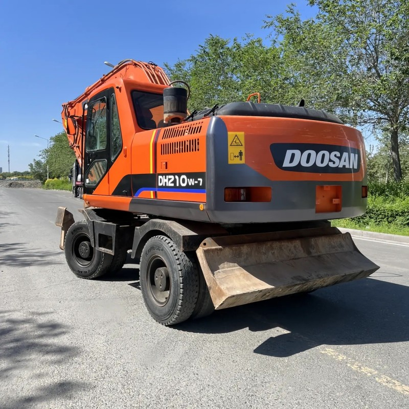

Refurbished Doosan DH210 Excavator
The Doosan DH210 Excavator is known for its power, reliability, and efficient performance in demanding construction and earthmoving applications. A refurbished Doosan DH210 provides a cost-effective alternative to purchasing a new machine, with the added benefit of reduced upfront costs and reliable performance.
Honestly, it's almost impossible to buy a brand new excavator from China. They either don't exist or are made in China. If a Chinese seller tells you their Caterpillar/Komatsu/Volvo/Kobelco/Hitachi is brand new, they're lying. Therefore, a refurbished excavator is your best bet.

Here are the detailed specifications for a refurbished Doosan DH210LC-7 excavator:
Operating Weight and Dimensions
- Operating Weight: 21,000–21,500 kg
- Transport Length: ~9.6–9.8 meters
- Transport Width: ~2.99 meters
- Transport Height: ~3.0–3.2 meters
- Tail Swing Radius: ~3.0 meters
- Ground Clearance: ~440 mm
- Track Width: 600 mm standard
Engine and Powertrain
- Engine Model: Doosan DB58TIS (Tier 2 compliant)
- Rated Power Output: ~110–118 kW (148–158 hp) @ 1,950 rpm
- Maximum Torque: ~700 Nm
- Fuel Tank Capacity: ~400 liters
- Travel Speed: 3.0–5.5 km/h
- Swing Speed: ~11 rpm
- Gradeability: Up to 35°
Hydraulic System
- Main Pump Type: Variable displacement axial piston pumps
- Flow Rate: ~2 × 220–240 L/min
- System Pressure: Up to 34.3 MPa
- Hydraulic Oil Capacity: ~300–350 liters
- Control System: Load-sensing with pilot-operated valves
- Boom/Arm/Bucket Priority: Configurable via control lever
Performance Metrics
- Bucket Capacity: 0.8–1.1 m³ (SAE heaped)
- Max Digging Depth: ~6.7 meters
- Max Reach (Horizontal): ~10.0 meters
- Max Dump Height: ~6.5 meters
- Bucket Digging Force: ~140 kN
- Arm Digging Force: ~100 kN
Cab and Operator Features
- Cab Type: ROPS/FOPS certified
- Display: Analog gauges or basic LCD monitor
- Controls: Pilot-operated joysticks with auxiliary hydraulic circuit
- Comfort: Adjustable seat, optional HVAC
- Visibility: Wide glass area, LED work lights
Smart Features and Efficiency
- Fuel Efficiency:
- Mechanical fuel injection
- Auto idle and engine shutdown
- Emissions Control: Tier 2 compliant (no DPF/SCR)
- Telematics: Not standard; optional retrofit available
- Transportability: Easily trailerable under 22-ton class
Attachments Compatibility
- Standard Bucket: 0.8–1.1 m³
- Optional Tools: Hydraulic breaker, auger, compactor, ripper
- Quick Coupler: Manual or hydraulic options available
Refurbishment Scope
Refurbished DH210 units typically include:
- Engine Overhaul: Cylinder head, turbocharger, injectors, seals
- Hydraulic Restoration: Pump recalibration, valve block testing, hose replacement
- Electrical Diagnostics: Monitor, sensors, wiring harness
- Cab Reconditioning: Seat, joysticks, HVAC, repainting
- Structural Repairs: Boom/bucket welding, bushing replacement, undercarriage rebuild
Overview of the Doosan DH210 Excavator
The Doosan DH210 is a mid-sized hydraulic crawler excavator designed for tough, heavy-duty work. It combines a powerful engine with a solid hydraulic system, providing excellent digging depth, reach, and versatility. This machine is ideal for general excavation, site preparation, demolition, and other heavy-duty tasks in construction projects.
Key Specifications of the Doosan DH210
-
Operating Weight: Approximately 21,500 kg (47,400 lbs)
-
Engine Power: 123 kW (164 hp)
-
Max Digging Depth: Up to 6.35 meters (20.8 feet)
-
Max Reach: About 9.5 meters (31.2 feet)
-
Bucket Capacity: Typically ranges from 0.8 to 1.0 cubic meters (28.3–35.3 cubic feet)
-
Fuel Tank Capacity: Around 330 liters (87.3 gallons)
-
Travel Speed: Max speed of 5.5 km/h (3.4 mph)
These specifications make the Doosan DH210 a versatile, high-performance machine that can handle a wide range of construction tasks, from digging trenches to lifting heavy materials.
Performance and Power
The Doosan DH210 is equipped with a powerful 123 kW (164 hp) engine that provides exceptional digging force, lifting capacity, and overall performance. Whether working on uneven terrain or in confined spaces, the DH210 can perform consistently, efficiently, and with minimal downtime. Its hydraulic system and powerful engine make it capable of working on challenging tasks, including digging through hard soil, lifting heavy loads, and operating various attachments.
Key Performance Features:
-
High Lifting Capacity: With its sturdy boom and arm, the Doosan DH210 provides excellent lifting capabilities. It is ideal for applications that require lifting and placing heavy materials, such as steel beams, construction debris, or heavy-duty equipment.
-
Powerful Digging Force: The Doosan DH210 excels in digging, with a strong hydraulic system and a high digging force that ensures productivity and speed. It is especially effective for trenching and deep excavation work in tough soils.
-
Fuel Efficiency: The Doosan DH210 features a fuel-efficient engine that provides excellent power while minimizing fuel consumption. This makes it a cost-effective option for businesses looking to reduce operating costs over the long term.
Durability and Design
The Doosan DH210 Excavator is designed to withstand the harshest working conditions, including rough terrain, heavy-duty operations, and extreme weather. It is engineered with durability in mind, ensuring that it can operate for extended periods without compromising performance.
Key Design Features:
-
Reinforced Undercarriage: The undercarriage is built for maximum durability, with heavy-duty components that can handle the stress of continuous use on tough surfaces. This increases the machine's stability and ensures long-term reliability.
-
Robust Boom and Arm: The boom and arm are made from high-strength materials that provide increased lifting capacity and resistance to wear. These components are designed to handle high-impact tasks without the risk of damage.
-
Reliable Hydraulics: The hydraulic system of the Doosan DH210 is engineered for efficiency and reliability, delivering optimal performance during digging, lifting, and attachment operations. With minimal hydraulic system failures, the machine can maintain high productivity levels with fewer interruptions.
Versatility with Attachments
One of the standout features of the Doosan DH210 Excavator is its ability to accommodate a wide range of attachments. These attachments enhance the machine’s versatility, making it ideal for different tasks in construction, demolition, and material handling.
-
Versatile Hydraulics: The hydraulic system can easily power various attachments, such as hammers, grabs, augers, and other tools, making the Doosan DH210 an ideal choice for businesses needing a multi-functional machine for different tasks.
-
Quick Coupler Compatibility: The Doosan DH210 is compatible with quick couplers, which allow for easy attachment changes without the need for additional tools. This enhances operational efficiency and minimizes downtime when switching between different tasks.
-
Customizable Attachments: Whether you need a bucket for digging, a breaker for demolition, or a grapple for material handling, the Doosan DH210 can be equipped with the right attachment to tackle any job.
Operator Comfort and Safety
The comfort and safety of the operator are paramount when using the Doosan DH210 Excavator. The cabin is designed to provide a comfortable, ergonomic working environment, which helps reduce fatigue during long shifts and improves operator efficiency.
Key Features for Comfort and Safety:
-
Spacious Operator Cabin: The operator cabin offers ample space and a clear view of the worksite, reducing blind spots and improving safety. The air-conditioned cabin ensures comfort even in hot weather conditions.
-
User-Friendly Controls: The controls are intuitive and easy to operate, allowing the operator to focus on the task at hand. The ergonomic layout reduces the learning curve, making it easier for operators to get accustomed to the machine.
-
Safety Features: The Doosan DH210 includes safety features such as ROPS (Roll-Over Protective Structure), FOPS (Falling Object Protective Structure), and a reinforced cabin to ensure the operator’s safety in case of an accident. Additionally, the machine comes with warning systems, emergency shut-off features, and an easy-to-access emergency exit.
Benefits of a Refurbished Doosan DH210 Excavator
Purchasing a refurbished Doosan DH210 Excavator comes with several advantages, including cost savings, reliability, and the ability to access a machine that has been fully restored to its optimal operating condition. Here are some of the key benefits:
Cost-Effectiveness
Buying a refurbished Doosan DH210 can save businesses up to 40-60% compared to purchasing a new machine. Refurbished models are fully inspected, repaired, and upgraded to meet factory standards, providing almost the same level of performance as a new unit.
Long-Term Reliability
A well-maintained, refurbished Doosan DH210 offers the same level of performance and reliability as a new model, with the added benefit of a lower price. Regular maintenance and inspections ensure that the machine runs efficiently for years, minimizing the chances of major breakdowns and unplanned repairs.
Warranty and Support
Many refurbished Doosan DH210 Excavators come with warranties that offer peace of mind for buyers. Additionally, the availability of after-sales support and spare parts ensures that the machine can be easily serviced when needed.
Maintenance Tips for the Doosan DH210 Excavator
To ensure the Doosan DH210 continues to operate at its best, regular maintenance is essential. Here are some maintenance tips to keep in mind:
-
Regular Engine Maintenance: Change the engine oil and air filters regularly to ensure optimal performance. Keep the engine coolant levels in check to avoid overheating.
-
Hydraulic System Maintenance: Regularly check hydraulic fluid levels and replace filters to prevent dirt and debris from affecting the system’s performance. Inspect hoses for leaks and wear.
-
Undercarriage Care: Inspect the undercarriage for any signs of damage or wear, especially after working in rough or rocky terrain. Lubricate the tracks and rollers regularly to ensure smooth operation.
-
Cab Maintenance: Clean the cab frequently and inspect safety features like seat belts, ROPS, and FOPS to ensure they are in good working condition.
Conclusion
The Doosan DH210 Excavator is an excellent machine for businesses looking to get the job done with efficiency, power, and versatility. With its durable design, powerful engine, and adaptable hydraulic system, the Doosan DH210 remains a go-to choice for construction and excavation professionals. Opting for a refurbished model offers a budget-friendly solution while retaining high performance and reliability, making it a smart investment for businesses of all sizes.
With proper maintenance, a refurbished Doosan DH210 Excavator can provide years of reliable service, helping you achieve greater productivity and efficiency on your job sites.
Our Commitment
- 2 years / 4000 hours warranty.
- EPA certified.
- No sweatshop labor.
Contacts

- [email protected]
- Youtube Instagram Facebook
- Navigation: G206 (Sishu Bridge) in Changfeng County, Hefei City, Anhui Province, 200 meters north to the east